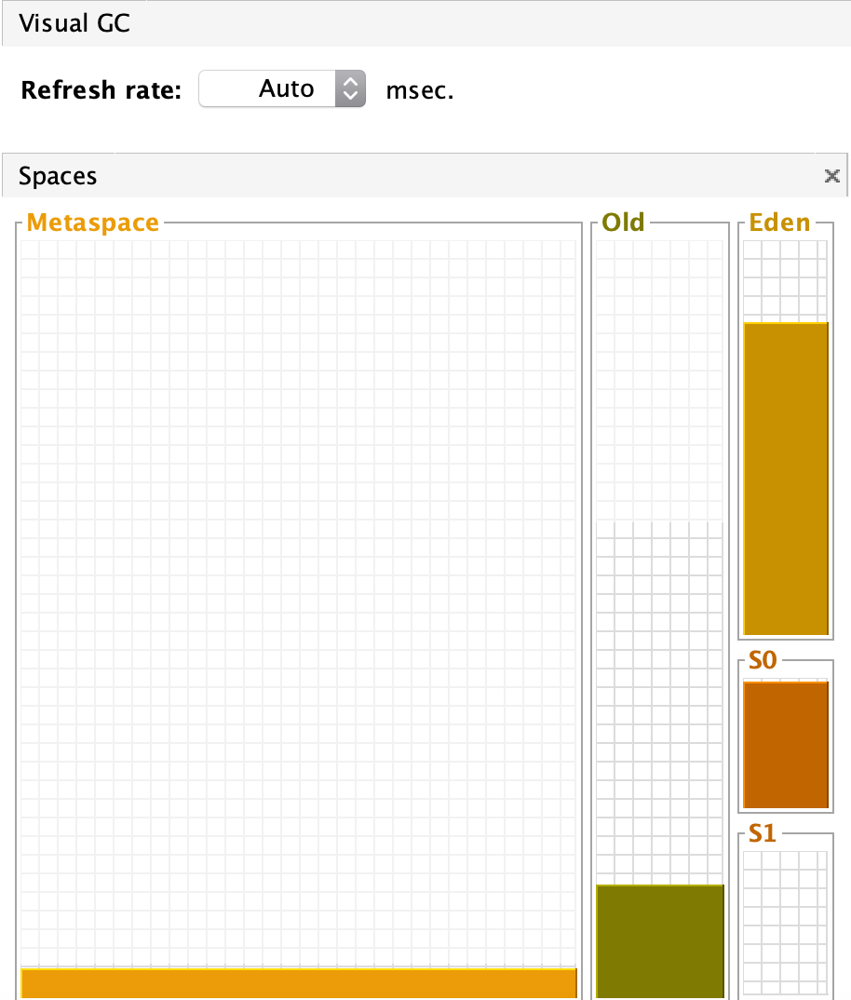
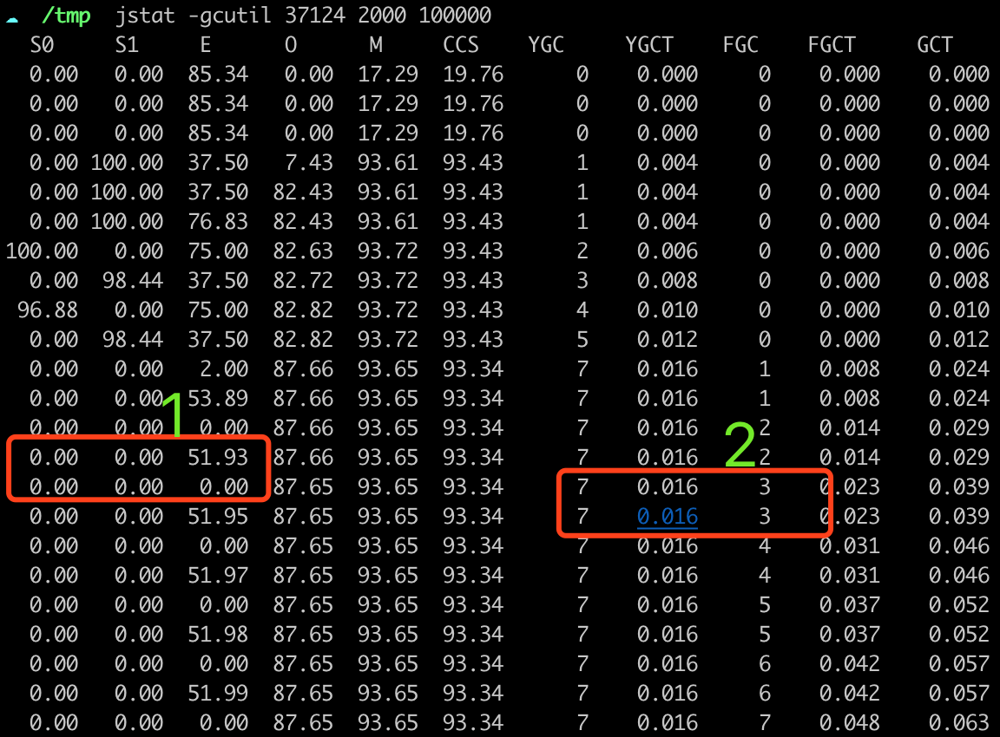

Java程序员比C/C++程序员幸福的一点是，不需要手工管理内存的申请和释放，尽管垃圾回收像一个围城，大家都想到对面去。在实际的编程中，Java程序员要相对幸福一点，可以自由发挥，随意建立对象，本文也不想讨论JVM具体的垃圾，回收机制和算法，而是从实际编程的角度出发，讲一讲怎么配合JVM的垃圾回收，在编程中应该注意哪些事项，总的一个宗旨就是不要管垃圾回收的事情，程序员能做的事情不多。
1、妄想控制JVM进行垃圾回收？？？
手工把大对象设置为null，并不能优化GC，原因在于GC的时机，jvm并不是时时刻刻都在进行垃圾回收，大部分垃圾收集器力求减少GC，能不要Full GC，就不要Full GC，所以相信JVM的作者是足够聪明的，垃圾收集器可以在适当的时候GC。
极端情况： 如果你有1个特别长的方法，申请了一个超大的对象，可以考虑在用完之后，把对象设置为null，一种更优的办法是，让方法保持短小精悍。
System.gc() 更像是毒苹果，JVM不能保证会在调用了这个方法之后，进行垃圾回收。
1 | /** |
你只能建议JVM回收，JVM会在需要的时候，自动执行垃圾回收。配合JVM，才是正道，所以大部分情况下，程序员是不能通过调用gc方法来手工进行垃圾回收的，有一些特殊情况，一些NIO的框架例如Netty或者其它的NIO功能，使用了MMAP，进行了内存映射，这部分内存属于堆外内存，不归JVM管理，仍然需要手工处理，大部分的人不会去开发类似于Netty这样的框架，也就不需要关心了。
2、为什么我更偏爱ArrayList
- ArrayList是内存连续的，对CPU缓存更友好，尤其是你的ArrayList的长度是32 64这样的2的幂次方的时候。
- 因为在内存中是连续的，可以减少内存碎片的产生。如果内存碎片过多，JVM在申请大对象的时候，找不到连续的内存，即使Old GC还有很多空闲，也会触发Full GC。
- 复制算法，在GC的时候，会把Eden和其中1个Survivor中还存活的对象，复制到另外1个Survivor中，连续的内存，复制会更快。
- 支持random read，即get()方法是O(1)的时间复杂度。
从GC的角度看，ArrayList可能会更合适，但是使用的时候，还是要考虑实际的需要，如果链表里的数据是需要频繁更改的，例如你在通过链表实现1个队列，那么仍然是优先考虑LinkedList。
3、对象朝生夕死
 Eden和S0和S1的比例，一般是8:1:1，这么做的原因是设计者认为Java中的对象，都是短命鬼，仅有很少的对象能够存活，S0和S1足以容纳这些幸存者。所以我们写代码的时候，就需要顺应这个设计：
第一： 让对象尽可能快点死，static属性的对象是不死的，方法里的局部变量死的最快。
第二： 方法写的不要太长，否则对象不容易死。
第二： 减少大对象，如上图所示，一旦Eden和S0中有大对象，超过了S1的大小，会直接进入Old区，可能触发Full GC。
第三： 短命的小对象对GC很友好，需要的时候可以随时new，不要吝啬。
第四：JVM不仅怕大对象，更怕朝生夕死的大对象
设置启动参数： -Xms18m -Xmx18m -Xmn10m，然后执行一下代码：
1 | int i = 0; |
我们每2秒打印下GC情况(Old=8m，Eden=8 S0=1 S1=1 大概值，勿喷)
第1个红框可以看出full gc一般伴随一次young gc
第2个红框可以看出每2秒分配1次大对象，导致了一次full gc
4、 堆外内存
Java的NIO中，ByteBuffer可以使用堆外内存，JVM只保存一个引用，实际的内存在堆外。
1 | -XX:MaxDirectMemorySize=8m |
运行这段代码之后，稍等一下（或者设置下最大的堆）
执行 jps -l 查看pid 是37288
执行 jstat -gcutil 37288 1000 10000，查看系统GC情况
可以发现系统的Eden区、S0、S1都占用很小(byteBuffer引用还在堆内)，一直在进行Full GC，堆外内存需要触发Full GC时候才能回收。
5、堆大小设置的越大越好吗？
并不是，对于实时性要求比较高的系统，正确的方法是减少GC时间，而不是GC的次数，堆设置的越大，GC的时候需要回收的内存越多，时间就会越长。这块就是JVM调优的内容了，大致的思路是观察下，目前JVM的GC的频率和时间，看看GC的原因是什么，然后可以调一下年轻代和年老代的比例大小，机器的内存也是有成本的，能用4G内存满足需要，就不需要把堆设置为8G，所以成本也是一个原因。
6、结论：
不去手工控制GC、避免大对象、小对象成本低，可以频繁创建、合理设置堆内存大小、注意观察堆外内存占用。
全文完。